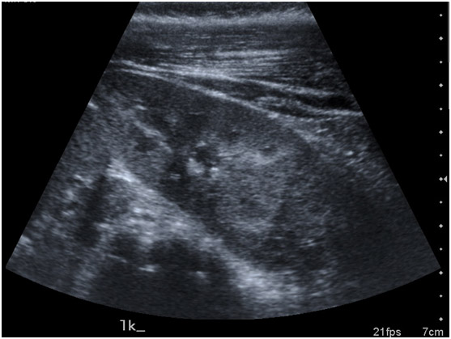

EMBRYOLOGY
The embryological development of the kidney results from the interaction between the mesonephric duct-derived ureteric bud, and the metanephros, the most caudal part of the nephrogenic cord. Development begins early in the 4th week of gestation and during the 6th and 8th weeks the lobulated embryonic kidneys ascend from the pelvic region upwards along the posterior abdominal wall to their normal position and undergo a 90◦ axial rotation from horizontal to medial. At the same time the ureteric bud divides sequentially to form the pelvicalyceal system.
During the process of ascent from the pelvis, the kidneys derive their blood supply sequentially from vessels that are closest to them- initially median sacral, then common iliac and inferior mesenteric, and finally, the aorta.
An ectopic kidney results from either incomplete, excess or abnormal ascent. If during the process of ascent the kidneys come into contact, a horseshoe kidney or crossed renal ectopia will result.
ANOMALIES OF MIGRATION: RENAL ECTOPIA
Renal ectopia results from failure of normal ascent of the embryonic kidney. This may arise as a result of abnormalities of the ureteric bud or metanephros, an abnormal vascular supply or genetic abnormalities.
The incidence of renal ectopia in postmortem studies varies from 1 in 500 to 1 in 1290 , . It occurs slightly more frequently on the left side and 10% of cases are bilateral. The male to female ratio is equal. Around 50% remain unrecognized throughout life. In parts of Kenya there is a 3 times increased incidence in unrelated subjects, suggesting an as yet undefined environmental factor.
Magak P, King CH, Ireri E et al: High prevalence of ectopic kidney in Cost Province, Kenya. Trop Med Int Health 9(5): 595-600, 2004
Anatomy
Ectopic kidneys lie outside the renal fossa and may be pelvic, iliac, thoracic or crossed and are rarely normal. They are often small, lobulated kidneys with abnormal rotation with extrarenal calyces and an irregular vascular supply. Simple renal ectopia refers to a kidney in the ipsilateral retroperitoneal space and is most commonly located in the pelvis but may be opposite the sacrum or below the aortic bifurcation. The lumbar or iliac ectopic kidney is fixed above the iliac crest but below the level of L2 and L3. A thoracic kidney is exceedingly rare and is due to excessive cranial migration prior to diaphragmatic closure or delayed closure with continued ascent .
 |
 |
 |
 |
 |
 |
 |
 |
Pre and postnatal diagnosis
An ectopic kidney may be diagnosed antenatally particularly if hydronephrosis is present. A pelvic kidney is the most common finding in a fetus with an empty renal fossa and normal amniotic fluid volume [see Figure 1] .
fig1
If not diagnosed antenatally, most cases are diagnosed on ultrasound scan performed for symptoms secondary to a pelvi-ureteric junction (PUJ) obstruction, renal calculi or vesico-ureteric reflux (VUR). It may also be diagnosed on the finding of an abdominal mass, though this is less common. Radionuclide imaging is indicated whenever an empty renal fossa is identified on ultrasound [see Figure 2].
fig2
Micturating cystography is recommended in those with infection to exclude VUR. If obstruction is suspected on ultrasound, then drainage may be assessed using a MAG-3 renal scan, but the areas of interest must be selected appropriately. CT or MR urography may be useful, particularly in non-functioning kidneys.
Associated abnormalities
The most common problem associated with an ectopic kidney is vesico-ureteric reflux (VUR) which occurs in up to 85% of children , 8. Pelvi-ureteric junction (PUJ) obstruction is present in 33-52% , . This is frequently due to a high insertion of the ureter on the renal pelvis, malrotation of the kidney or an anomalous blood supply which obstructs the collecting system. Renal calculi are also seen in this condition.
The contralateral kidney is abnormal in as many as 50% of patients . Contralateral renal agenesis occurs in 10%. Additional malformations of the cardiovascular, respiratory, genital or skeletal systems are common , . Skeletal anomalies are most commonly scoliosis and hemivertebrae. Genital malformations in females including duplication of the vagina, bicornuate uterus and hypoplasia or agenesis of the uterus or vagina may cause problems during menstruation, conception, and pregnancy. The most common genital anomalies in males are hypospadias and cryptorchidism.
Kramer SA, Kelalis PP. Ureteropelvic junction obstruction in children with renal ectopy. J Urol (Paris) 1984; 5:331-6
Gleason PE, Kelalis PP, Husmann DA, Kramer SA. Hydronephrosis in renal ectopia: incidence, etiology and significance. J Urol 1994; 151:1660-1
Malek RS, Kelalis PP, Burke EC. Ectopic kidney in children and frequency of association with other malformations. Mayo Clin Proc 1971:46;461-7
Kelalis PP, Malek RS, Segura JW: Observations on renal ectopia and fusion in children. J Urol 110:588, 1973.
Downs RA, Lane JW, Burns E: Solitary pelvic kidney. Its clinical implications. Urology 1:51–56, 1973
Outcome and Complications
Renal ectopia does not require intervention unless complications develop. Vesico-ureteric reflux in ectopia frequently resolves spontaneously as seen in VUR in normal kidneys, although this may be less likely in girls . Should pyeloplasty for PUJ obstruction become necessary, this may be approached transabdominally, either open or laparoscopic depending on the precise location of the kidney.
Renal calculi can usually be managed as in normally located kidneys, with good results described for both extracorporeal shock wave lithotripsy (ESWL) and percutaneous nephrolithotomy (PCNL). Access to the kidney with PCNL can be difficult, but there are reports of laparoscopic guidance to assist with a transperitoneal approach . Every effort should be made to preserve renal tissue as the contralateral kidney is frequently abnormal.
Maheshwari PN, Bhandarkar DS, Andankar MG et al: Laparoscopically guided transperitoneal percutaneous nephrolithotomy for calculi in pelvic ectopic kidneys. Surg Endosc 18(7): 1151, 2004
ANOMALIES OF FUSION: HORSESHOE KIDNEY AND CROSSED RENAL ECTOPIA
If during ascent the developing kidneys fuse in the midline, a horseshoe kidney will result. When one kidney advances slightly ahead of the other, the inferior pole of one may come into contact with the superior pole of the lower kidney and fuse, resulting in crossed fused renal ectopia.
HORSESHOE KIDNEY
The most common abnormality of renal fusion is the horseshoe kidney. The fusion of the embryonic kidneys occurs early in gestation when they are in close proximity and is the result of abnormal migration of nephrogenic cells . The reported incidence is between 1:400 and 1:1800 with a M:F ratio of 2:1 , . A genetic basis for the anomaly has been suggested and horseshoe kidney has been reported in monozygotic twins and siblings within the same family . Cystic renal disease and other inherited renal anomalies occur with the same incidence as seen in normal kidneys.
Trapp JD, Zukoski CF, Shelley HS, Goldner F Jr: Nephrectomy for a polycystic horseshoe kidney with successful cadaver renal allograft. South Med J 58:1370, 1965.
Kalra D, Broomhall J, Williams J: Horseshoe kidney in one of identical twin girls. J Urol 134:113, 1985.
Anatomy
The kidneys are joined by an isthmus which links the lower poles in 95% of cases and the upper poles in 5%. The isthmus may be fibrotic, dysplastic, or normal renal parenchyma. The position of the isthmus is variable. The isthmus lies at level of L4 just below the origin of the inferior mesenteric artery (IMA) in 40%. The presence of the IMA may restrict further ascent of the horseshoe during early embryogenesis. In another 40% the kidneys the isthmus is located in a normal anatomical position, whilst the kidneys lie lower in the pelvis in the remaining 20%. Malrotation of the kidneys is always present and is attributed to early fusion prior to normal rotation. The renal pelvices remain anterior, with the ureters crossing the isthmus.
The blood supply to horseshoe kidneys is extremely variable. Thirty percent have a normal anatomical pattern, the remaining 70% are supplied by a combination of vessels entering from the aorta or the renal, mesenteric, iliac, or sacral arteries. The isthmus frequently has separate blood vessels that may occasionally represent the entire renal blood supply . This of course has implications for surgery.
Pre and Postnatal Diagnosis
The horseshoe kidney may be suspected on antenatal ultrasound or diagnosed on routine investigations of the renal tract. Ultrasound may demonstrate the abnormal position of the horseshoe as well as the connecting isthmus or more often poor visualisation of the lower borders of the kidneys [see Figure 3].
fig3
The diagnosis may be suspected on plain abdominal film if the renal outlines are visible. Radionuclide imaging may reveal a functioning isthmus [see Figure 4].
fig4
Intravenous urography, though seldom performed in children, often demonstrates classical appearances with renal malrotation and medially pointing lower pole calyces. The upper ureters are often displaced laterally by the isthmus. VUR can be demonstrated on MCUG. Excellent anatomical detail can be gained using CT or Gadolinium-enhanced MR urography.
Associated abnormalities
It has been reported that one third of patients with horseshoe kidney have at least one other abnormality . The most commonly affected systems are the gastrointestinal, skeletal, cardiovascular and central nervous system. Ureteral duplication is reported to occur in 10% and VUR in 10 - 80% . Multicystic dysplasia and autosomal dominant polycystic kidney disease has also been reported.
Horseshoe kidney is present in 21% of patients with trisomy 18 and in 7% in those with Turner’s syndrome. Abdominal aortic aneurysms have been reported later in life . Hypospadias and cryptorchidism occurs in 4% of males and bicornate uterus or septate vagina in 7% of females20.
Canova G, Masini R, Santoro E, et al: Surgical treatment of abdominal aortic aneurysm in association with horseshoe kidney. Three case reports and a review of technique. Tex Heart Inst J 25:206, 1998
Outcomes and Complications
Outcomes depend on associated urological problems as horseshoe kidneys are usually asymptomatic. PUJ obstruction occurs in 30% and is more often left-sided [see Figure 5].
fig5
This may result from an intrinsic PUJ obstruction, impaired drainage due to the position of the isthmus, high insertion of the ureter or occasionally crossing vessels22 . It is the most common indication for surgical intervention in patients with horseshoe kidney. Surgical access to the PUJ depends on the position and may be approached retroperitoneally either anteriorly or through the flank. Occasionally a transperitoneal approach is necessary, and this has now been reported using laparoscopic techniques and also with robotic assistance . Division of the isthmus was previously recommended to avoid the ureter crossing over it but this is no longer considered necessary . Ureterocalicostomy for reconstruction, rather than a routine pyeloplasty allows dependent drainage and reportedly has good results .
Schuster T,Dietz HG, Shutz S. Anderson-Hynes pyeloplasty in horseshoe kidney in children: is it effective without symphysiotomy? Pediatr Surg Int 1999: 15:230-3
Mollard P, Braun P: Primary ureterocalycostomy for severe hydronephrosis in children. J Pediatr Surg 1980; 15:87-91
Renal calculi occur in up to 20% of horseshoe kidneys. This can be attributed to stasis secondary to obstruction but metabolic causes should be excluded. ESWL has similar success rates to that in normal kidneys. PCNL can be more difficult due to access and flexible scopes are frequently required. However excellent stone clearance rates have been reported for large and ESWL resistant stones . Xanthogranulomatous pyelonephritis has been reported but is rare .
Gupta NP, Mishra S, Seth A, Anand A. Percutaneous Nephrolithotomy in Abnormal Kidneys: Single-Center Experience. Urology 2009; 73(4):710-14
Hammadeh MY, Calder CJ, Corkery JJ: Paediatric xanthogranulomatous pyelonephritis in a horseshoe kidney. Br J Urol 73:721, 1994
There is an increased risk of malignancy in horseshoe kidneys in childhood. Wilms tumour occurs with a 1.5- to 8-fold increased risk and surgical management can be challenging , , . The diagnosis of the horseshoe kidney has frequently been missed preoperatively despite CT scan. The risk of malignancy in adults with horseshoe kidneys seems to be similar to that in the normal population, with <200 cases of malignancy reported for horseshoe kidney . Renal cell carcinoma, transitional cell carcinoma, oncocytoma and carcinoid have all been described and seem to present relatively late.
Gay BB Jr, Dawes RK, Atkinson GO Jr, et al: Wilms tumor in horseshoe kidneys: Radiologic diagnosis. Radiology 146:693, 1983,
van der Poel HG, Feitz WF, Bokkerink J, et al: Wilms tumor with teratomatous cysts in a horseshoe kidney: A diagnostic pitfall. J Urol 157:1837, 1997.
Stimac G, Dimanovski J, Ruzic B et al: Tumours in kidney fusion anomalies – report of 5 cases and review of the literature. Scand J Urol Nephrol 38(6): 485-9, 2004
CROSSED RENAL ECTOPIA
The 2nd most common fusion anomaly is crossed renal ectopia. This occurs in 1:7000 with a M:F ratio of 2:1 . Both kidneys are located on the same side and may occur with fusion (85%), without fusion (<10%), or extremely rarely be solitary or bilateral , , . The left kidney is 3 times more likely to migrate to the right than vice versa. Other fusion anomalies are extremely rare and include lump kidney, sigmoid kidney, disk kidney and L-shaped kidney. There are rare cases of familial crossed ectopia .
It has been suggested that crossed renal ectopia results from overbending and rotation of the caudal end of the developing embryo leading to the inability of the ureteric bud to communicate with the more distant ipsilateral metanephros. The kidney is then attracted to the closer contralateral side. This theory is supported by the fact that there is an increased incidence of crossed ectopia among patients with scoliosis .
Wilmer HA: Unilateral fused kidney. A report of five cases and a review of the literature. J Urol 40:551, 1938.
Rinat C, Farkas A, Frishberg Y. Familial inheritance of crossed fused renal ectopia. Pediatr Nephrol 16:269-270, 2001
Cook WA, Stephens FD: Fused kidneys: morphologic study and theory of embryogenesis. Birth Defects 13:327-340, 1977
Anatomy
The upper pole of the crossed kidney usually fuses to the lower pole of the normally positioned kidney. The kidney usually remains incompletely rotated with the pelvis anterior. However, if complete rotation occurs prior to fusion, an S- or sigmoid kidney results and the pelvices face in opposite directions. The lump or disk kidney results from extensive fusion of the developing kidneys. In the ‘L’ shaped kidney, the crossed kidney assumes a transverse position.
The vascular supply of fused kidneys is extremely variable. There may be anomalous branches to both kidneys arising from the aorta or common iliac artery. Rarely the renal artery crosses the midline to supply the crossed kidney. Urinary drainage is usually by separate ureters entering the bladder on either side of the trigone.
Pre and Postnatal Diagnosis
Most crossed kidneys remain undetected throughout life. However they may be detected on antenatal screening or may present with infection, a mass or on screening for urinary abnormalities . CT or MRU allows excellent definition of the precise anatomy. Isotope scanning is also useful.
Associated abnormalities
There is an increased incidence of associated malformations. Those reported are of the cardiac, musculoskeletal, genital, gastrointestinal, anorectal, and renal systems, occasionally as part of the VACTERL association. The most common associated urological abnormality is VUR. It has also been described with pelvic malignant lipomatosis and an entire chromosomal translocation involving chromosomes 1 and 6 .
Outcomes and Complications
As with horseshoe kidneys, no intervention is required in crossed ectopia unless a complication develops. Symptoms may be related to infection or obstruction. There is a relatively high incidence of chronic kidney disease in crossed renal ectopia, and long term nephrology follow up is suggested.
SUMMARY
Anomalies of renal migration and fusion are rare. The majority are asymptomatic and in fact remain undetected throughout life. For those patients affected by obstruction, recurrent infection, or renal calculi, renal function should dictate management, though blood supply and position need to be considered when surgery is planned.